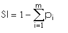

DESCRIPTION
r.li.simpson
calculates the "simpson's diversity index" as:

with:
- i: patch type
- m: number of patch type
- pi: proportion of the landscape
occupied by patch type i
NOTES
Do not use absolute path names for the output map/file.
If the "moving window" method was selected in r.li.setup, then the
output will be a raster map, otherwise an ASCII file will be generated in
the ~/.grass7/r.li/output/ folder.
If input raster is full of null values r.li.simpson returns -1.
If you want to have null values instead run
r.null setnull=-1 input=my_map
EXAMPLES
To calculate simpson's diversity index on map my_map, using
my_conf configuration file and saving results in my_out file run:
r.li.simpson input=my_map conf=my_conf output=my_out
REFERENCES
McGarigal, K., and B. J. Marks. 1995. FRAGSTATS: spatial pattern
analysis program for quantifying landscape structure. USDA For. Serv.
Gen. Tech. Rep. PNW-351. (PDF)
SEE ALSO
r.li
AUTHORS
Serena Pallecchi student of Computer Science University of Pisa (Italy).
Commission from Faunalia Pontedera (PI), Italy (www.faunalia.it)
Last changed: $Date$